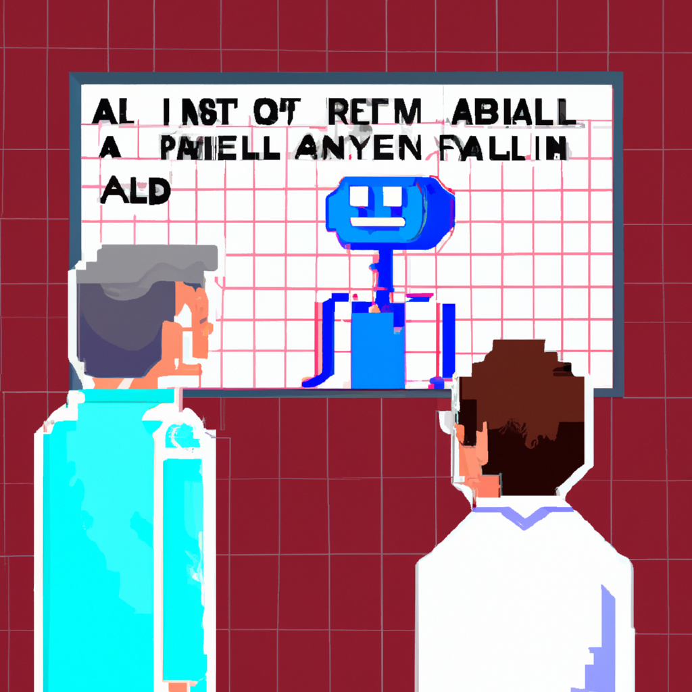

Why AI will never replace the radiologist
AI has been making great strides in the medical field, with machine learning being used to assist doctors in diagnosing patients. However, there is a limit to how far AI can take us when it comes to radiology. Radiology is a complex field and requires a deep understanding of human anatomy and physiology to be able to accurately diagnose diseases and injuries. While AI can be used to assist doctors in making diagnoses, it can never replace the radiologist.
Radiologists have a deep understanding of human anatomy and physiology, and can use this knowledge to interpret images and diagnose diseases. AI can only go as far as recognizing patterns, which can be useful but is not always reliable. The radiologist's human eye is still necessary to fully assess a patient's condition. AI can help to speed up the process of diagnosis, but it will never be able to replace the radiologist's experience, knowledge and judgement.
AI can also never replace the human touch. Radiologists need to be able to communicate with their patients and assess their mental and emotional health. AI cannot do this, and it cannot replace the empathy and compassion that radiologists bring to the table.
In conclusion, AI is a powerful tool, but it will never be able to replace the radiologist. It can help to speed up the diagnostic process, but it cannot replace the radiologist's experience, knowledge and judgement. AI can also never replace the human touch, and radiologists will always be necessary for providing the best care for their patients.